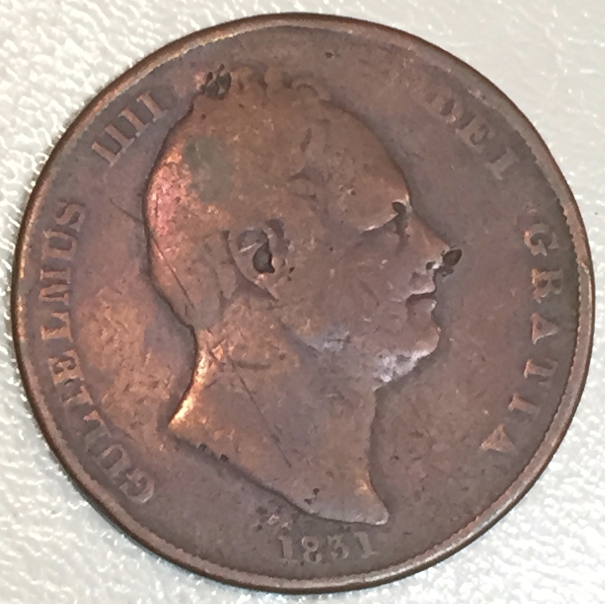
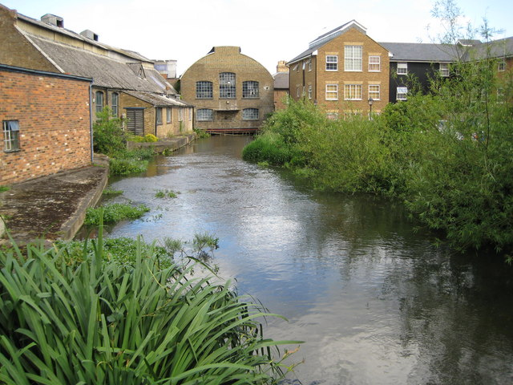

The history of the penny of Great Britain and the United Kingdom from 1714 to 1901, the period in which the House of Hanover reigned, saw its transformation from a small silver coin to a larger bronze piece. All bear the portrait of the monarch on the obverse; copper and bronze pennies have a depiction of Britannia on the reverse. During most of the 18th century, the penny was a small silver coin rarely seen in circulation. Beginning in 1787, the chronic shortage of good money resulted in the wide circulation of private tokens, including ones valued at one penny. In 1797 Matthew Boulton gained a government contract and struck millions of pennies. The copper penny continued to be issued until 1860, when they were replaced by lighter bronze coins; the "Bun penny", named for the hairstyle of Queen Victoria on it, was issued from then until 1894. The final years of her reign saw the "Old head" pennies, coined from 1895 until her death in 1901. (Full article...)
Recently featured: 70th Infantry Division (United Kingdom) Camille Saint-Saëns Mark Oliphan
Archive
By email
More featured articles
Did You know...

- that Frogmore Paper Mill (pictured) is the oldest surviving mechanical paper mill in the world?
- ... that Beerbohm, a cat owned by the Gielgud Theatre, became famous for entering actors' dressing rooms, attacking props, and wandering across the stage during performances?
- ... that photographer Evgenia Arbugaeva won the trust of a Siberian mammoth-tusk hunter by stitching up his injured hand?
- ... that Sam Hornish Jr. of Panther Racing won the 2002 Delphi Indy 300 by 0.0024 seconds, the closest margin of victory in Indy Racing League history?
- ... that Türkan Rado was the first female professor of law in Turkey?
- ... that despite John Fogerty's agreement with hippie generation political concerns, his lyrics for Creedence Clearwater Revival's "Don't Look Now (It Ain't You or Me)" were critical of hippie attitudes?
- ... that footballer Willie Anderson agreed to join the Portland Timbers despite not knowing where the team was based?
Archive
Start a new article
Nominate an article